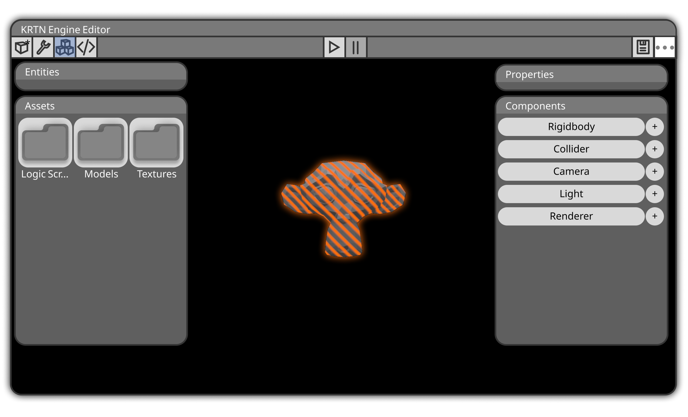
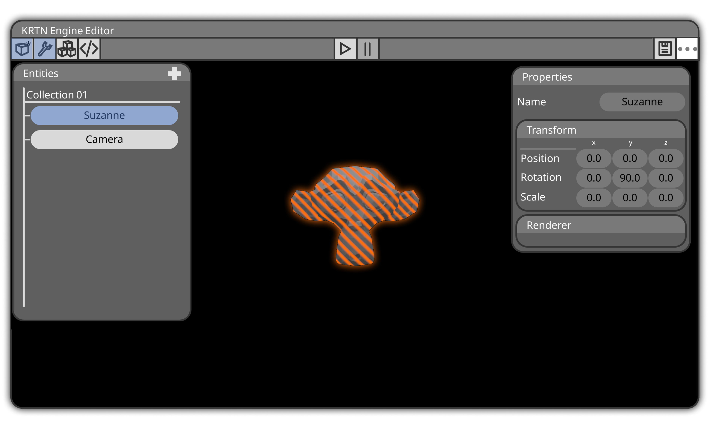
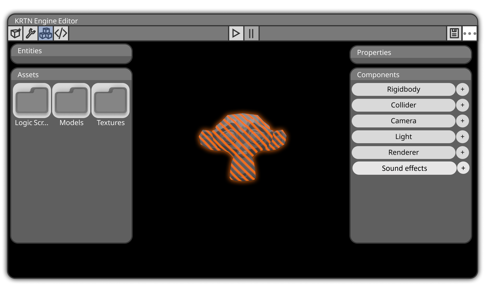
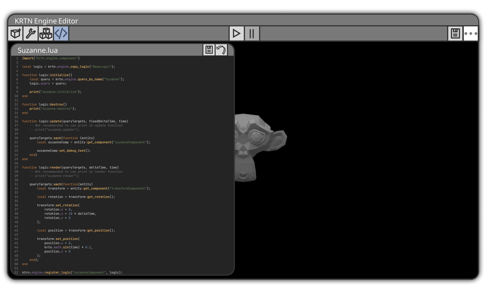
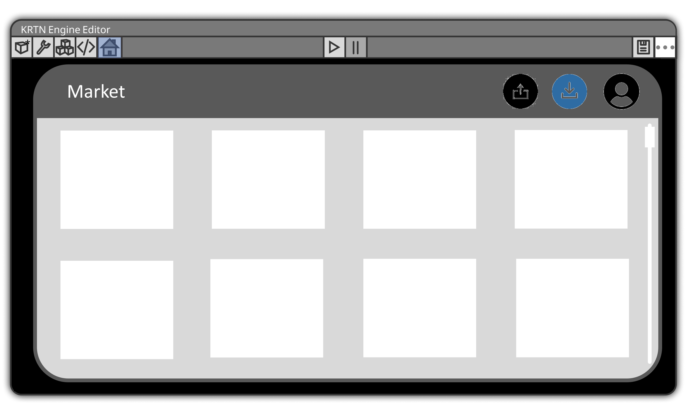

1. Bevezetés
2. Telepítés
3. Projektek Kezelése
4. Grafikus Felhasználói Interfész
4.1. Hogyan hozzunk létre elemeket
4.2. Kamera és objektum pozícionálás
4.3. Kamera és objektum pozícionálás
5.1. Objektumok létrehozása és pozícionálása
5.2. Kamera kezelése
6. Market használata
7. Adatmodellek
8. Funkcionális modell
A 3D multi-purpose game engine (motor) egy olyan szoftveres keretrendszer, amely lehetővé teszi a fejlesztők számára, hogy 3D-s játékokat hozzanak létre és kezeljenek. Ezek a motorok számos funkciót biztosítanak, amelyek segítik a játékfejlesztési folyamatot. Néhány ismert 3D multi-purpose game engine közé tartozik az Unreal Engine, Unity, CryEngine és Godot Engine. Ezek a motorok széles körű lehetőségeket biztosítanak a fejlesztőknek, és segítenek létrehozni 3D-s játékokat, csökkentve annak fejlesztési költségeit illetve idejét. A motorok sokoldalúsága révén bárki, legyen az tapasztalt játékfejlesztő vagy újonc, képes olyan projekteket létrehozni, amelyek a saját elképzeléseit és kreativitását tükrözik. A grafikus és hangi elemek kezelése, az animációk létrehozása, a fizika és mesterséges intelligencia implementálása, valamint a cross-platform támogatás mind-mind a fejlesztők rendelkezésére áll.
A telepítést megelőzőleg ellenőrizzük az internet kapcsolatot. Ellenőrizd, hogy a célrendszeren telepítve van-e a Java Runtime Environment (JRE) vagy a Java Development Kit (JDK). Ha nincs telepítve, töltsd le és telepítsd a legfrissebb Java verziót a hivatalos Oracle Java weboldalról vagy használd az OpenJDK-t. Majd az adott oldalon található Download/Letöltés felitara kattintva autómatikusan elindul a kliens telepítése. A letöltött fájl lehet ZIP vagy JAR kiterjesztésű. Amennyiben ZIP, kicsomagolás után a kliensre kattintva futtatható. JAR fájl esetén nyisd meg a parancssor vagy terminál ablakot a célkönyvtárban, majd futtasd a java -jar yourfile.jar parancsot. A game engine java nyelvet és OpenGL-t támogató operációs rendszereken futtatható, egyedül a LWJGL és Gson könyvtárak hiánya okozhat futtatási hibát.
A menüsor jobb szélén található flopi alakú gombbal lehet gyorsmenteni, ami a CRTL+S billentyűk lenyomásával is elérhető. Projecktek megnyitása, illetve létrehozása a Mentés melletti 3 pontot tartalmazó gombbal lehetséges. A rákattintást követően a megjelenő listában található többek között a 'Mentés másként','Projekt megnyitása' és az 'Új projekt' is. A "Mentés másként" opció azáltal különbözik a hagyományos "Mentés" opciótól, hogy lehetőséget ad a felhasználónak a fájl mentési helyét és nevét megadni. Ez általában a szoftverekben akkor használatos, amikor az alapértelmezett fájlnevet vagy elérési utat szeretnénk módosítani. Minden játékmotor egyedi projektfájlok és mappastruktúrák használatával rendelkezik. Amikor egy projektet létrehozol egy játékmotorban, a motor automatikusan elkészíti az alapvető fájlokat és könyvtárakat a projektben. A projekt kiterjesztése általában az egyedi fájlstruktúra vagy a motor sajátos fájlformátumának egyik része.
A játékmotorok gyakran tartalmaznak beépített modelleket, textúrákat és egyéb erőforrásokat, amelyek segíthetnek a fejlesztőknek a prototípusok elkészítésében, a tesztelésben, vagy akár egy teljes játék létrehozásában, ilyen például a Character Modellek és a Environment Modellek is. A képen látható módon az Objektumokat, avagy Entity-ket tartalmazó ablak a bal felső sarokban látható legszélső gombbal érhető el. Az Entity ablak megjelenése után láthatók a már létező objektumok. Újak hozzáadása pedig a + gombbal történik, a gomb lenyomása után megjelenik egy ablak, amelyikben kilehet választani, hogy a beépített modellek közül akarunk hozzáadni vagy ha egy sajátot, akkor az 'Egyéb'-re kattintva tallózhatjuk a meghajtónkról. A program által ismert kiterjesztásek közé tartozik a BLEND, a STl és a 3DS is.
Egy objektum pozícióját, elforgatását illetve méretét a Properties ablakban érhetjük el. Az ablak megjelenítése a bal fent található csavarkulcs gombbal lehetséges. Az ablak tartalmazza a kiválasztott objektum adatait, amik azok átírásával változtathatók meg.
A kamera is egy objektumként van kezelve, így annak pozícionálása és mozgatása az objektumokkal megegyező módon történik. Állítsd be a kamera pozícióját a játék terében. Ez határozza meg, honnan nézi a játékot. Például, ha a játékos szemszögét szeretnéd, a kamera pozíciója legyen azonos a játékos pozíciójával. Ha a játékos mozog, a kamera követését biztosítanod kell. Ezt lehet egyszerűen a kamera pozíciójának frissítésével megoldani, illetve scripteléssel.
Az 'Assets' és 'Components' menü ablakok megnyitása a bal felül található gombbal történik. Az Assets ablakban találhatók a projekt által tartalmazott képek, hangok, textúrák és kész modellek is. Itt az Assetek mappákba való csoportosítása megkönnyítheti a fejlesztő számára a munkát. A Components ablakban állíthatók be egyes Entity-k fizikai tulajdonságai, ilyen például a 'Rigidbody' illetve a 'Collider' is.
Hanghatások (audio effects) használata egy game engine-ben szintén kulcsfontosságú a játékélmény megteremtésében. Első lépésként importáld be a hangfájlokat a projektbe, amiket ezután a az Assets ablak találhatsz meg. Ez lehetővé teszi, hogy a játékban ezeket a hangokat használd. A Hanghatások használata a 'Components' ablakban tálálható, amiben a Sound Effects fülben adható hozzá hanghatások. A hang fájlok formátuma MP3, WAV,OGG illetve FLAC lehet.
A scriptek használata elengedhetetlen része egy Game Engine-nek. Scriptinggel lehet befolyásolni az objektumok dinamikus mozgatását, létrehozását stb. A sctripteket tartalamazó ablak a bal felső gombbal nyitható meg, ezután a szerkezteni kívánt script file fiválasztása után az ablakban csak a script fog megjelenni. A megnyitott script az ablak jobb felső sarkában lévő flop alakú gombbal menthető, míg visszalépni a scriptek listájához az ablak sarkéban található nyíllal lehetséges.
A Market ablak a bal menüsor utolsó gombjával nyitható meg. A Market használata csak felhasználó fiókkal lehetséges, a regisztrációhoz az ablak jobb oldalán látható user iconra kattintva lehetséges illetve a bejelentkezls is itt történik. A középső icon a Marketre feltöltött modellek, projektek stb. letöltése lehetséges. Míg a bal oldali icon a feltöltésre szolgál. A feltöltés során néhány jellemző, valamint egy rövid leírás megadása kötelező.
A motor a teljes projektet egyetlen fájlba menti, amelynek kiterjesztése .json. A fájlban található adatokat a Gson könyvtár segítségével olvassa és írja. A fájlban található adatokat a következőképpen lehet felosztani:
A funkcionalitásában a projekt mindössze pár lépésben fogja kezelni a fájlokat:
...és a projekt betöltése befejeződött.